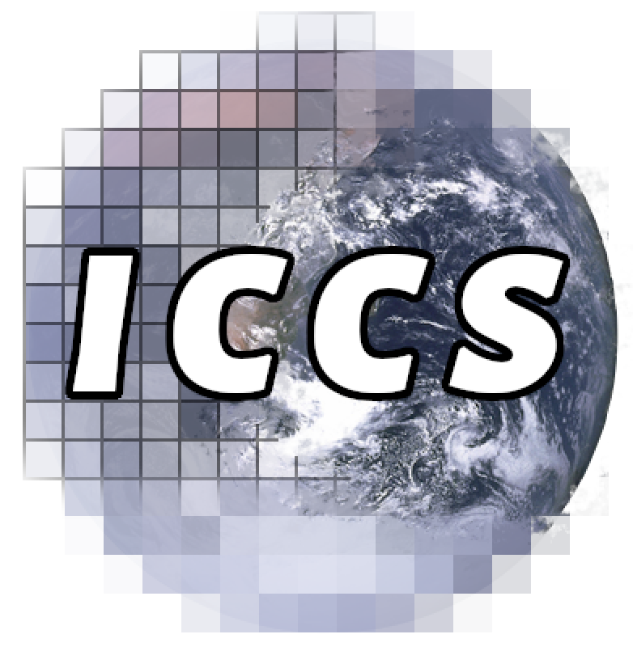
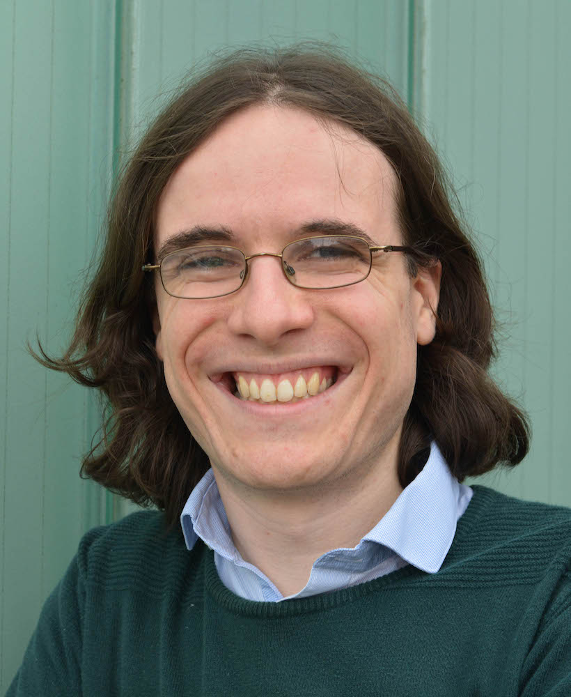
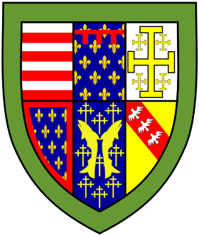

{% assign collection = site.pubs | sort: "date" | group_by: "type" %}

<div id='outer'>


<div id='leftpane'>
  <h1 style='margin-bottom:0.5em;'>Dr Dominic Orchard</h1>
      My research is at the intersection of <strong>types</strong>, <strong>semantics</strong>,
  and <strong>logic</strong>, with a focus on <strong>programming languages</strong> and <strong>verification</strong>. I also work closely with domain experts
  in climate science.<br />
  <ul class='front'>
    <li>Senior Lecturer in the
    <a href="https://research.kent.ac.uk/programming-languages-systems/">Programming Languages and Systems</a> group<br />
    <a href="https://www.kent.ac.uk/computing">School of
    Computing</a>, <a href="http://www.kent.ac.uk"> University of
      Kent</a></li>
   <li>Co-director of the <a
    href="https://cambridge-iccs.github.io/">Institute of Computing for
    Climate Science</a><br /> <a
    href="https://www.cst.cam.ac.uk/">Department of Computer Science
    and Technology</a>, <a href="http://www.cam.ac.uk">University of Cambridge</a>
   </li>
    <li>Bye-Fellow at <a href="https://www.queens.cam.ac.uk/">Queens' College, Cambridge</a>
    </li>
    </ul>
    I am also a Fellow of the <a href="https://software.ac.uk/">Software Sustainability Institute</a>.

    <h3 style='margin-top:0.25em'>Projects</h3>
    Key funded projects that I am currently working on: <br />
  <ul>
    <li><a href="http://cambridge-iccs.github.io/" class='proj'>
    
    Institute of Computing for Climate Science</a></li>
        <li><a href="https://granule-project.github.io/" class='proj'>
      
      Granule
        - Capturing program properties via graded (modal) types</a>
      </li>
      <li>
        <a href="http://camfort.github.io" class='proj'>
        
        - Verification and static analysis for computational science
      </a>
      </li>
    </ul>

    <table class='people'>
      <tr>
        <td>
          <h4>PhD Students</h4>
        </td>
        <td>
          <h4>Postdocs and Research Assistants</h4>
        </td>
      </tr>
      <tr>
        <td>
    <ul>
      <li><a href="https://www.jackohughes.com/">Jack Hughes</a></li>
      <li><a href="https://github.com/buggymcbugfix/not-not-a-blog#blog">Vilem Liepelt</a></li>
      <li><a href="https://starsandspira.ls/">Daniel Marshall</a></li>
      <li><a>Paulo Torrens</a></li>
      <li><a href="https://research.kent.ac.uk/programming-languages-systems/person/tori-vollmer/">Tori Vollmer</a></li>
    </ul>
    </td>
    <td>

    <ul>
      <li><a href="https://raehik.github.io/">Ben Orchard</a></li>
      <!-- <li><a href="http://recurial.com/">Michael Vollmer</a></li> -->
      <!-- <li><a href="https://mpaviotti.github.io/">Marco Paviotti</a></li> -->
    </ul>

    </td></tr>
    </table>


    <h3>Recent Publications</h3>

    {% for group in collection %}
        {% if group.name == 'article' %}

        <!-- <h4>Papers in Proceedings <span class="badge">{{ group.items | size }}</span></h4> -->

        <ul class="list-group">

          {% assign pubs = group.items | sort: "date" | reverse %}
          {% for publication in pubs %}

            <li class="list-group-item">
              <b>{{ publication.title }}</b><br />
              {{ publication.authors | join: ', ' }}<br />
              {% if publication.venue %} {{ publication.venue }} {% endif %}

              {% if publication.resource %}
                {% if publication.resource.slides %}
                  [<a href="{{ publication.resource.slides }}">Slides</a>]
                {% endif %}
                {% if publication.extra-note %}
                  - <strong class='note'>{{ publication.extra-note }}</strong> -
                {% endif %}
                {% if publication.resource.pdf-url %}
                [<a href="{{ publication.resource.pdf-url}}">PDF</a>]
                {% endif %}
                {% if publication.resource.doi-pdf %}
                [<a href="{{ publication.resource.doi-pdf}}">Publisher PDF</a>]
                {% endif %}
                {% if publication.resource.appendix %}
            [<a href="{{ publication.resource.appendix }}">Appendix</a>]
                {% endif %}
                {% if publication.resource.bibtex %}
                <small>(<a href="assets/bibtex/{{ publication.resource.bibtex }}.txt" class="bibtex">BibTeX</a>)</small>
                {% endif %}
              {% endif %}
            </li>
            {% endfor %}
        </ul>
        {% endif %}
    {% endfor %}

<h3>Service</h3>

<ul>
  <li>Co-chair: <a href="https://icfp21.sigplan.org/home/TyDe-2021">TyDe 2021</a>, <a href="">PADL 2021</a>, <a href="">PLACES 2019</a>, <a href="">PLACES 2016</a>, <a href="https://2015.ecoop.org/track/PLE-2015-papers">PLE 2015</a>, <a href="https://www.cl.cam.ac.uk/research/cprg/ple14/">PLE 2014</a>
  </li>
    <li>Programme Committee: <a href="https://bristolpl.github.io/tase2023/">TASE 2023</a>, <a href="https://popl23.sigplan.org/">POPL 2023</a>, <a href="https://www.haskell.org/haskell-symposium/2022/">Haskell 2022</a>, <a href="https://popl19.sigplan.org/">POPL 2019</a>, <a href="https://popl19.sigplan.org/track/beat-2019-papers">BEAT 2019</a>, <a href="https://icfp18.sigplan.org/track/tyde-2018">TyDe 2018</a>, <a href="https://www.haskell.org/haskell-symposium/2015/">Haskell 2015</a>, <a  href="https://2017.programming-conference.org/track/refuses-2017">Salon des Refusés 2017</a>, <a href="http://www.cs.ru.nl/P.Achten/IFL2013/IFL_2013_home.html">IFL 2013</a></li>
  <li>External Review Commitee: <a href="https://icfp20.sigplan.org/">ICFP 2020</a></li>
  <li>Artefact Evaluation Commitee: <a href="http://ecoop14.it.uu.se/aec.php">ECOOP 2014</a></li>
  <li>Other: Local organizer of <a href="https://cambridge-iccs.github.io/climate-informatics-2023/">Climate Informatics 2023</a>, Panelist at <a href="https://popl19.sigplan.org/details/PLMW-2019-papers/1/Panel-Grad-School-and-Beyond">PLMW 2019</a></li>
</ul>

</div>

<div id='rightpane'>
  
  <br /><br />
  <br /><br />
  
  <!--<br /><br />
   -->
  <br /><br />
  <div id='links-out'>
    <strong>E-mail: </strong><br />
    <a href="mailto:d.a.orchard@kent.ac.uk">d.a.orchard@kent.<!-- -->ac.uk</a><br />
    <a href="mailto:dominic.orchard@cl.cam.ac.uk">dominic.orchard@cl.cam<!-- -->.ac.uk</a><br /><br />
      <strong>Office:</strong><br/> <a href="https://www.cs.kent.ac.uk/rooms/SW108.gif">SW108</a>, <a href="https://www.google.com/maps/place/Cornwallis+South+%26+South+West,+Canterbury+CT2+7NF/@51.2986354,1.068569,17z/data=!4m5!3m4!1s0x47decba7c6b71b0b:0xe2453d348bfa18a1!8m2!3d51.2985461!4d1.0701504?hl=en">Cornwallis South</a>, University of Kent, Canterbury, UK<br /><br />
      <a href="https://www.cl.cam.ac.uk/research/dtg/openroommap/static/?h=SN12">SN12</a>, <a href="https://www.google.com/maps/place/William+Gates+Building,+15+JJ+Thomson+Ave,+Cambridge+CB3+0FD/@52.2109006,0.0916506,17z/data=!3m1!4b1!4m5!3m4!1s0x47d8774a3fdc414b:0xe98fb897497ce850!8m2!3d52.2109006!4d0.0916506?hl=en">William Gates Building</a>, University of Cambridge, Cambridge, UK<br /><br />
      <strong>Find me on: </strong><br />
    <span><a href="http://twitter.com/dorchard">Twitter</a></span><br />
    <span><a href="http://github.com/dorchard">GitHub</a></span><br />
    <span><a href="https://dblp.org/pid/12/7603.html">DBLP </a></span><br />
    <span><a href="https://dorchard.blog">Blog</a></span><br />
    <span><a href="https://www.kent.ac.uk/computing/people/3074/orchard-dominic">University of Kent</a></span><br />
    <span><a href="https://scholar.google.com/citations?user=vEsF_IwAAAAJ&hl=en&oi=ao">Google Scholar</a></span><br />
    <span><a href="https://orcid.org/0000-0002-7058-7842">ORCID</a></span><br />
  </div>
</div>


</div>
